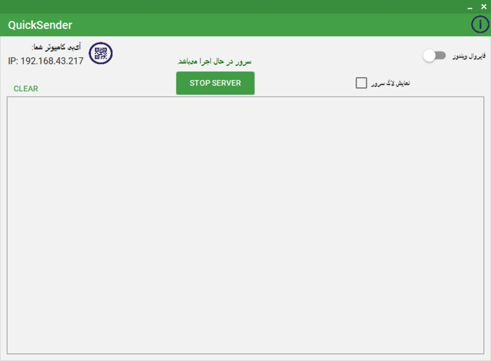

به نام خدا
یکی از مشکلاتی که همواره در موقع امتحانات مجازی پیش میآید، فرستادن تصاویر پاسخ ها به لپ تاپ و یا کامپیوتر شخصی است، بنابراین تصمیم گرفتم برنامه ای بنویسم که در کمترین زمان تصاویر را از روی گوشی به لپ تاپ ارسال کند، و در صورت نیاز فایل پیدیاف آن ها را نیز ارسال کند.
این برنامه از شبکه داخلی برای ارسال فایل ها استفاده میکند، یعنی در صورتی که لپ تاپ و گوشی شما به یک شبکه Wi-Fi مشترک متصل باشند، یا گوشی شما به صورت Wi-Fi HotSpot (نقطه اتصال همراه) به لپ تاپ متصل باشد، به سادگی میتوانید تصاویر خود را بدون هیچگونه کار اضافی منتقل کنید.
روند اجرای برنامه بسیار ساده است، کافی است شما ابتدا نسخه ویندوز برنامه را اجرا کرده از راه اندازی کامل سرور مطمئن شوید.(در صورتی که برنامه به صورت کامل راه اندازی شده باشد رنگ نوار آن به سبز تغییر پیدا خواهد کرد) سپس برنامه اندروید را باز کنید، آیپی لوکال لپ تاپ خود را انتخاب کرده و شروع به ارسال تصاویر کنید، تمامی تصاویر ارسال شده روی دسکتاپ لپ تاپ شما قابل دسترسی هستند تا بتوانید به سرعت آن ها را در سامانه آپلود کنید.
دانلود فایل Apk نسخه مخصوص اندروید (نیازمندی ها: اندروید 4.1 و بالاتر)
دانلود فایل exe نسخه مخصوص ویندوز (نیازمندی ها: .Net Framework 4.6.1 and above)
تصاویری از اجرای صحیح برنامه:
